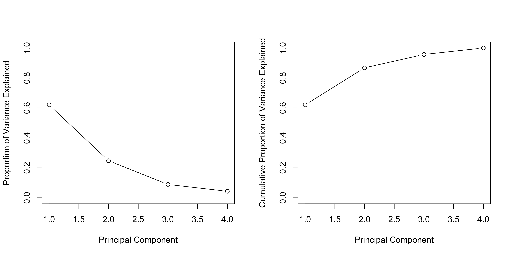

[1] "Alabama" "Alaska" "Arizona" "Arkansas"
[5] "California" "Colorado" "Connecticut" "Delaware"
[9] "Florida" "Georgia" "Hawaii" "Idaho"
[13] "Illinois" "Indiana" "Iowa" "Kansas"
[17] "Kentucky" "Louisiana" "Maine" "Maryland"
[21] "Massachusetts" "Michigan" "Minnesota" "Mississippi"
[25] "Missouri" "Montana" "Nebraska" "Nevada"
[29] "New Hampshire" "New Jersey" "New Mexico" "New York"
[33] "North Carolina" "North Dakota" "Ohio" "Oklahoma"
[37] "Oregon" "Pennsylvania" "Rhode Island" "South Carolina"
[41] "South Dakota" "Tennessee" "Texas" "Utah"
[45] "Vermont" "Virginia" "Washington" "West Virginia"
[49] "Wisconsin" "Wyoming" Lab 5
Introduction to Statistical Learning - PISE
Aldo Solari
Ca’ Foscari University of Venice
Unsupervised Learning
Principal Components Analysis
- PCA is performed on the
USArrestsdataset (included in base R)
- Rows represent the 50 U.S. states
- States are listed in alphabetical order
- Columns of the dataset correspond to the four variables
- Initial data exploration is performed
- Variables have very different mean values
apply()applies a function (e.g.,mean()) to rows or columns of a dataset
- Second argument specifies dimension (
1= rows,2= columns)
- Data shows large scale differences: rapes ≈ 3× murders, assaults ≈ 8× rapes
apply()can also be used to compute variances of variables
- Variables have very different variances
UrbanPop(percentage) is not comparable to crime rates (per 100,000 people)
- Without scaling, PCA would be dominated by
Assault(largest mean and variance)
- Therefore, variables must be standardized (mean = 0, sd = 1) before PCA
- PCA is performed using the
prcomp()function in R
prcomp()centers variables to mean 0 by default
scale = TRUEstandardizes variables to standard deviation 1
- Output of
prcomp()includes several useful components
center: means of variables used for centering
scale: standard deviations used for scaling before PCA
Murder Assault UrbanPop Rape
7.788 170.760 65.540 21.232 Murder Assault UrbanPop Rape
4.355510 83.337661 14.474763 9.366385 rotationmatrix contains the principal component loadings
- Each column represents a principal component loading vector
- Multiplying the data matrix
Xbyrotationgives the principal component scores
- Called “rotation” because it represents a rotation of the original coordinate system
PC1 PC2 PC3 PC4
Murder -0.5358995 -0.4181809 0.3412327 0.64922780
Assault -0.5831836 -0.1879856 0.2681484 -0.74340748
UrbanPop -0.2781909 0.8728062 0.3780158 0.13387773
Rape -0.5434321 0.1673186 -0.8177779 0.08902432- There are 4 principal components
- In general, number of informative PCs = min(n − 1, p)
prcomp()directly provides principal component scores
pr.out$xis a 50 × 4 matrix of scores
- Each column corresponds to a principal component score vector
- The first two principal components can be visualized using a plot
- In
biplot(),scale = 0scales arrows to represent loadings
- Different
scalevalues change interpretation of the biplot
- PCA results are only unique up to a sign change
- Plots may appear as mirror images due to sign ambiguity
- Sign flipping can reproduce equivalent visualizations
prcomp()outputs the standard deviation of each principal component
- These can be accessed via
pr.out$sdev
- Variance explained by each principal component is obtained by squaring the standard deviations
- Computed as:
pr.var <- pr.out$sdev^2
- Proportion of variance explained (PVE) is computed by dividing each component’s variance by total variance
- Computed as:
pve <- pr.var / sum(pr.var)
- First principal component explains ~62.0% of the variance
- Second principal component explains ~24.7%
- Remaining components explain smaller proportions
- PVE and cumulative PVE can be visualized with plots
par(mfrow = c(1, 2))
plot(pve, xlab = "Principal Component",
ylab = "Proportion of Variance Explained", ylim = c(0, 1),
type = "b")
plot(cumsum(pve), xlab = "Principal Component",
ylab = "Cumulative Proportion of Variance Explained",
ylim = c(0, 1), type = "b")
- Results are visualized in a plot (Figure 12.3)
cumsum()computes the cumulative sum of a numeric vector
- Used to calculate cumulative proportion of variance explained
Matrix Completion
- Recreate analysis on
USArrestsdataset
- Convert data frame to matrix
- Center and scale each column (mean = 0, variance = 1)
Importance of components:
PC1 PC2 PC3 PC4
Standard deviation 1.5749 0.9949 0.59713 0.41645
Proportion of Variance 0.6201 0.2474 0.08914 0.04336
Cumulative Proportion 0.6201 0.8675 0.95664 1.00000- First principal component explains ~62% of the variance
- PCA can be formulated as an optimization problem on centered data
- Computing the first M principal components solves this problem
- Singular Value Decomposition (SVD) is a general method to compute PCA
[1] "d" "u" "v" [,1] [,2] [,3] [,4]
[1,] -0.536 -0.418 0.341 0.649
[2,] -0.583 -0.188 0.268 -0.743
[3,] -0.278 0.873 0.378 0.134
[4,] -0.543 0.167 -0.818 0.089svd()returns three components:u,d, andv
- Matrix
vcorresponds to PCA loadings (up to a sign flip)
PC1 PC2 PC3 PC4
Murder -0.5358995 -0.4181809 0.3412327 0.64922780
Assault -0.5831836 -0.1879856 0.2681484 -0.74340748
UrbanPop -0.2781909 0.8728062 0.3780158 0.13387773
Rape -0.5434321 0.1673186 -0.8177779 0.08902432- Matrix
ucontains standardized principal component scores
- Vector
dcontains singular values (related to standard deviations)
- PCA scores can be recovered from SVD output
- These scores are identical to those from
prcomp()
[,1] [,2] [,3] [,4]
[1,] -0.97566045 -1.12200121 0.43980366 0.154696581
[2,] -1.93053788 -1.06242692 -2.01950027 -0.434175454
[3,] -1.74544285 0.73845954 -0.05423025 -0.826264240
[4,] 0.13999894 -1.10854226 -0.11342217 -0.180973554
[5,] -2.49861285 1.52742672 -0.59254100 -0.338559240
[6,] -1.49934074 0.97762966 -1.08400162 0.001450164
[7,] 1.34499236 1.07798362 0.63679250 -0.117278736
[8,] -0.04722981 0.32208890 0.71141032 -0.873113315
[9,] -2.98275967 -0.03883425 0.57103206 -0.095317042
[10,] -1.62280742 -1.26608838 0.33901818 1.065974459
[11,] 0.90348448 1.55467609 -0.05027151 0.893733198
[12,] 1.62331903 -0.20885253 -0.25719021 -0.494087852
[13,] -1.36505197 0.67498834 0.67068647 -0.120794916
[14,] 0.50038122 0.15003926 -0.22576277 0.420397595
[15,] 2.23099579 0.10300828 -0.16291036 0.017379470
[16,] 0.78887206 0.26744941 -0.02529648 0.204421034
[17,] 0.74331256 -0.94880748 0.02808429 0.663817237
[18,] -1.54909076 -0.86230011 0.77560598 0.450157791
[19,] 2.37274014 -0.37260865 0.06502225 -0.327138529
[20,] -1.74564663 -0.42335704 0.15566968 -0.553450589
[21,] 0.48128007 1.45967706 0.60337172 -0.177793902
[22,] -2.08725025 0.15383500 -0.38100046 0.101343128
[23,] 1.67566951 0.62590670 -0.15153200 0.066640316
[24,] -0.98647919 -2.36973712 0.73336290 0.213342049
[25,] -0.68978426 0.26070794 -0.37365033 0.223554811
[26,] 1.17353751 -0.53147851 -0.24440796 0.122498555
[27,] 1.25291625 0.19200440 -0.17380930 0.015733156
[28,] -2.84550542 0.76780502 -1.15168793 0.311354436
[29,] 2.35995585 0.01790055 -0.03648498 -0.032804291
[30,] -0.17974128 1.43493745 0.75677041 0.240936580
[31,] -1.96012351 -0.14141308 -0.18184598 -0.336121113
[32,] -1.66566662 0.81491072 0.63661186 -0.013348844
[33,] -1.11208808 -2.20561081 0.85489245 -0.944789648
[34,] 2.96215223 -0.59309738 -0.29824930 -0.251434626
[35,] 0.22369436 0.73477837 0.03082616 0.469152817
[36,] 0.30864928 0.28496113 0.01515592 0.010228476
[37,] -0.05852787 0.53596999 -0.93038718 -0.235390872
[38,] 0.87948680 0.56536050 0.39660218 0.355452378
[39,] 0.85509072 1.47698328 1.35617705 -0.607402746
[40,] -1.30744986 -1.91397297 0.29751723 -0.130145378
[41,] 1.96779669 -0.81506822 -0.38538073 -0.108470512
[42,] -0.98969377 -0.85160534 -0.18619262 0.646302674
[43,] -1.34151838 0.40833518 0.48712332 0.636731051
[44,] 0.54503180 1.45671524 -0.29077592 -0.081486749
[45,] 2.77325613 -1.38819435 -0.83280797 -0.143433697
[46,] 0.09536670 -0.19772785 -0.01159482 0.209246429
[47,] 0.21472339 0.96037394 -0.61859067 -0.218628161
[48,] 2.08739306 -1.41052627 -0.10372163 0.130583080
[49,] 2.05881199 0.60512507 0.13746933 0.182253407
[50,] 0.62310061 -0.31778662 0.23824049 -0.164976866 PC1 PC2 PC3 PC4
Alabama -0.97566045 -1.12200121 0.43980366 0.154696581
Alaska -1.93053788 -1.06242692 -2.01950027 -0.434175454
Arizona -1.74544285 0.73845954 -0.05423025 -0.826264240
Arkansas 0.13999894 -1.10854226 -0.11342217 -0.180973554
California -2.49861285 1.52742672 -0.59254100 -0.338559240
Colorado -1.49934074 0.97762966 -1.08400162 0.001450164
Connecticut 1.34499236 1.07798362 0.63679250 -0.117278736
Delaware -0.04722981 0.32208890 0.71141032 -0.873113315
Florida -2.98275967 -0.03883425 0.57103206 -0.095317042
Georgia -1.62280742 -1.26608838 0.33901818 1.065974459
Hawaii 0.90348448 1.55467609 -0.05027151 0.893733198
Idaho 1.62331903 -0.20885253 -0.25719021 -0.494087852
Illinois -1.36505197 0.67498834 0.67068647 -0.120794916
Indiana 0.50038122 0.15003926 -0.22576277 0.420397595
Iowa 2.23099579 0.10300828 -0.16291036 0.017379470
Kansas 0.78887206 0.26744941 -0.02529648 0.204421034
Kentucky 0.74331256 -0.94880748 0.02808429 0.663817237
Louisiana -1.54909076 -0.86230011 0.77560598 0.450157791
Maine 2.37274014 -0.37260865 0.06502225 -0.327138529
Maryland -1.74564663 -0.42335704 0.15566968 -0.553450589
Massachusetts 0.48128007 1.45967706 0.60337172 -0.177793902
Michigan -2.08725025 0.15383500 -0.38100046 0.101343128
Minnesota 1.67566951 0.62590670 -0.15153200 0.066640316
Mississippi -0.98647919 -2.36973712 0.73336290 0.213342049
Missouri -0.68978426 0.26070794 -0.37365033 0.223554811
Montana 1.17353751 -0.53147851 -0.24440796 0.122498555
Nebraska 1.25291625 0.19200440 -0.17380930 0.015733156
Nevada -2.84550542 0.76780502 -1.15168793 0.311354436
New Hampshire 2.35995585 0.01790055 -0.03648498 -0.032804291
New Jersey -0.17974128 1.43493745 0.75677041 0.240936580
New Mexico -1.96012351 -0.14141308 -0.18184598 -0.336121113
New York -1.66566662 0.81491072 0.63661186 -0.013348844
North Carolina -1.11208808 -2.20561081 0.85489245 -0.944789648
North Dakota 2.96215223 -0.59309738 -0.29824930 -0.251434626
Ohio 0.22369436 0.73477837 0.03082616 0.469152817
Oklahoma 0.30864928 0.28496113 0.01515592 0.010228476
Oregon -0.05852787 0.53596999 -0.93038718 -0.235390872
Pennsylvania 0.87948680 0.56536050 0.39660218 0.355452378
Rhode Island 0.85509072 1.47698328 1.35617705 -0.607402746
South Carolina -1.30744986 -1.91397297 0.29751723 -0.130145378
South Dakota 1.96779669 -0.81506822 -0.38538073 -0.108470512
Tennessee -0.98969377 -0.85160534 -0.18619262 0.646302674
Texas -1.34151838 0.40833518 0.48712332 0.636731051
Utah 0.54503180 1.45671524 -0.29077592 -0.081486749
Vermont 2.77325613 -1.38819435 -0.83280797 -0.143433697
Virginia 0.09536670 -0.19772785 -0.01159482 0.209246429
Washington 0.21472339 0.96037394 -0.61859067 -0.218628161
West Virginia 2.08739306 -1.41052627 -0.10372163 0.130583080
Wisconsin 2.05881199 0.60512507 0.13746933 0.182253407
Wyoming 0.62310061 -0.31778662 0.23824049 -0.164976866- Although
prcomp()could be used,svd()is used here for illustration
- Randomly remove 20 entries from the 50 × 4 data matrix
- Procedure:
- Select 20 rows (states) at random
- For each selected row, randomly remove one of the four variables
- Select 20 rows (states) at random
- Ensures each row still has at least three observed values
ina: indices of rows (states) with missing values
inb: indices of columns (features) with missing values
index.na: matrix combining row and column indices for missing entries
Demonstrates indexing a matrix using a matrix of indices
Implement Algorithm 12.1 for matrix completion
Define a function to approximate the matrix using
svd()
This function is used in Step 2 of the algorithm
svd()is used instead ofprcomp()for illustration purposes
- Explicit
return()is not needed in R; last computed value is returned automatically
with()is used to simplify access to elements ofsvdob
- Alternative: directly reference components (e.g.,
svdob$u,svdob$d,svdob$v) inside the function
- Step 1: initialize
Xhat(≈ \tilde{\mathbf{X}})
- Replace missing values with column means (computed from non-missing entries)
- Prepare variables to track progress of the iterative algorithm
- Initialize error measures and convergence threshold
- Set up structures to monitor changes across iterations
ismiss: logical matrix indicating missing entries (TRUE= missing)
Allows separation of missing vs non-missing values
Error tracking:
mss0: mean squared value of non-missing entries
mssold: previous mean squared error
mss: current mean squared error
Convergence criterion:
- Relative error =
(mssold - mss) / mss0
- Stop when relative error <
1e-7
- Scaling ensures convergence is independent of data magnitude
- Relative error =
Step 2 (iterative loop):
- Approximate matrix using
fit.svd()→Xapp
- Approximate matrix using
- Update missing values in
XhatusingXapp
- Update missing values in
- Compute new error and relative error
- Compute new error and relative error
Implemented using a
while()loop
while(rel_err > thresh) {
iter <- iter + 1
# Step 2(a)
Xapp <- fit.svd(Xhat, M = 1)
# Step 2(b)
Xhat[ismiss] <- Xapp[ismiss]
# Step 2(c)
mss <- mean(((Xna - Xapp)[!ismiss])^2)
rel_err <- (mssold - mss) / mss0
mssold <- mss
cat("Iter:", iter, "MSS:", mss,
"Rel. Err:", rel_err, "\n")
}Iter: 1 MSS: 0.3821695 Rel. Err: 0.6194004
Iter: 2 MSS: 0.3705046 Rel. Err: 0.01161265
Iter: 3 MSS: 0.3692779 Rel. Err: 0.001221144
Iter: 4 MSS: 0.3691229 Rel. Err: 0.0001543015
Iter: 5 MSS: 0.3691008 Rel. Err: 2.199233e-05
Iter: 6 MSS: 0.3690974 Rel. Err: 3.376005e-06
Iter: 7 MSS: 0.3690969 Rel. Err: 5.465067e-07
Iter: 8 MSS: 0.3690968 Rel. Err: 9.253082e-08 Algorithm converges after ~8 iterations
Relative error falls below threshold (
1e-7)
Final mean squared error ≈ 0.369 (on non-missing entries)
Evaluate performance:
- Compute correlation between imputed values and true values
- Algorithm 12.1 implemented manually for learning purposes
- For real applications, use
softImputepackage (CRAN)
- Provides efficient and scalable matrix completion methods